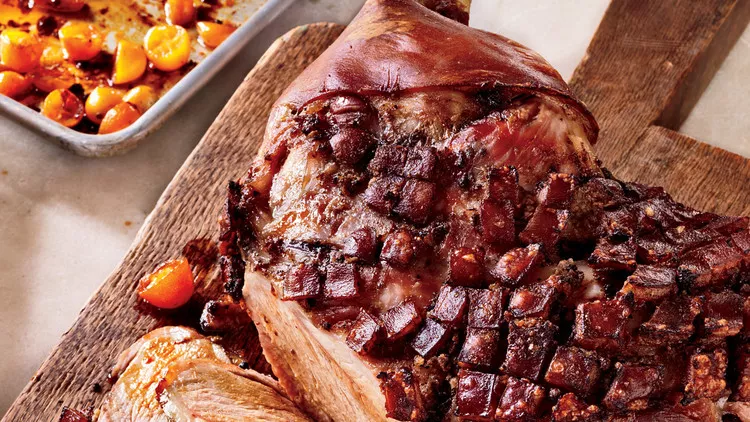

Slow-Roasted Pork

The recipe of Slow-Roasted Pork
Slow-roasting the pork with liquid (a mix of ale and water) in the pan makes the meat fall-apart tender. A blast of heat at the end crisps the skin.
Slow-Roasted Pork Ingredients
- Coarse salt
- 3 tablespoons turbinado sugar or light-brown sugar
- 2 tablespoons finely grated fresh ginger
- 2 teaspoons whole cloves, crushed into a coarse powder
- 2 teaspoons mustard powder, such as Colman's
- 1 skin-on, bone-in pork shoulder (also known as picnic shoulder; 8 pounds)
- 1 bottle (12 ounces) Belgian ale or pale ale
- 1 pint kumquats (about 10 ounces), halved
- 2 tablespoons honey
Steps
- Combine 1/4 cup salt, sugar, ginger, cloves, and mustard powder in a small bowl.
- Using a sharp knife, score skin (but not meat) on top and sides of pork in a diamond pattern at 1/2-inch intervals, leaving bone end unscored. Make about a dozen 1/2-inch-deep slits into flesh on top and underside using the tip of the knife. Transfer pork to a rimmed baking sheet or baking dish, and rub spice mixture into scored skin and flesh. Refrigerate, loosely covered with parchment, 12 to 24 hours.
- Let pork stand at room temperature for 1 1/2 to 2 hours before roasting. Uncover.
- Preheat oven to 325 degrees. Transfer pork to a clean rimmed baking sheet and pat skin dry. Pour beer and 1 1/2 cups water into baking sheet and wrap entire sheet in foil. Carefully transfer pork to oven and roast until meat is tender when pierced with a fork, about 3 hours and 15 minutes. Uncover pork.
- Toss kumquats with honey. Add to baking sheet, turning to coat. Roast until tender and lightly caramelized, about 30 minutes.
- Raise oven temperature to 425 degrees. Roast until pork skin is crisp and dark brown, 8 to 10 minutes. Let pork rest, tented with foil, for 45 minutes before carving. Serve with kumquats in pan juices.